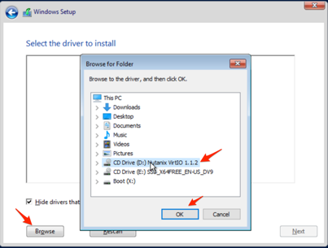
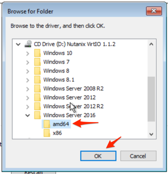
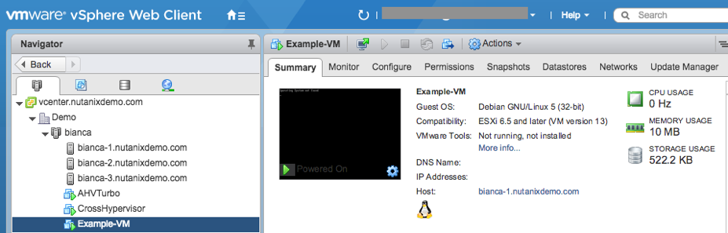
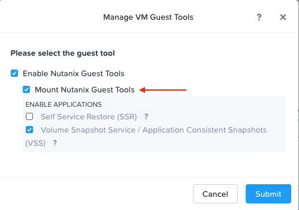
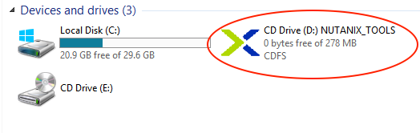
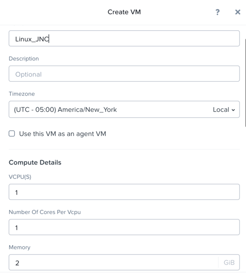

Deploying Workloads¶
นอกจากเรื่องของ storage แล้ว เรายังสามารถทำการ Create Manage และ Monitor VM ได้ โดยทำฟังก์ชันทุกอย่างนี้บน Nutanix AHV ผ่าน Prism ได้โดยตรง.
Note
Prism สามารถรองรับการจัดการ VM CRUD (Create, Read, Update, Delete) บน Nutanix Cluster ที่ใช้งานเป็น ESXi ได้เช่นเดียวกัน.
ใน Lab นี้ จะเป็นการสร้าง VMs จาก source media และจาก disk image ที่ได้เตรียมไว้แล้ว.
Note
ภายใน Labs นี้ จะมีการยกตัวอย่างด้วย XYZ หรือ Initial อยู่บ่อยครั้ง ดังนั้นให้ผู้เรียนสังเกตุ และเปลี่ยนตัวอย่างดังกล่าวให้เป็นชื่อของผู้เรียนเอง หรือเป็น User#No. ที่ได้รับมอบหมาย
Creating a Windows VM¶
ใน Lab นี้ เราจะทำการสร้าง Windows Server VM จาก Windows ISO image.
AHV นั้น มีฟังก์ชัน Image Service ที่สามารถสร้างแหล่งเก็บไฟล์ต่างๆ ที่ถูก import เข้ามาได้ ในตอนที่เราต้องการสร้าง VM นั้น เราสามารถ mount ISO image ขึ้นมาเป็น CD-ROM หรือจะเป็นการใช้ disk image ที่มี operating system พร้อมใช้งานแล้วก็ได้ โดย Image Service นั้น สามารถรองรับไฟล์รูปแบบ raw, vhd, vhdx, vmdk, vdi, iso และ qcow2 disk.
Note
เราสามารถเปิดเข้าไปดู images ที่มีให้ใช้งานได้ และสามารถ upload ไฟล์ images เพิ่มเติมเข้าไปได้ โดยเข้าที่ Prism Element แล้วไปที่ Setting ภายใต้ > Image Configuration.
สำหรับ Performance ที่ดีของ VM ที่สร้างขึ้นมา AHV นั้น จะต้องติดตั้ง paravirtualized drivers เข้าไปยัง guest vm ด้วย (เหมือนกับ VMware Tools) สำหรับ Windows guests นั้น ระหว่างติดตั้ง VM จะต้อง load ตัว drivers นี้ เพื่อที่ Windows installer ของ VM จะสามารถ access หรือมองเห็น disk ได้.
สามารถ download driver ได้จาก http://portal.nutanix.com. ***ไฟล์ driver ที่เป็น ISO image ถูกเตรียมไวใน Image Service เรียบร้อยแล้ว.
ใน Prism Element > VM > Table, คลิก**+ Create VM**.
กำหนดค่าต่างๆ ดังนี้ แล้วคลิก**Save**.
ค่าต่างๆ ที่ไม่ได้ระบุ ให้ใช้ค่า default values.
Name - Initials-Windows_VM
Description - (Optional) Description for your VM.
vCPU(s) - 2
Number of Cores per vCPU - 1
Memory - 4 GiB
- คลิกที่เครื่องหมาย ด้านหลัง CDROM
Operation - Clone from Image Service
Image - Windows2016.ISO
คลิก Update
ในขั้นตอน เป็นการ mount ตัว Windows Server ISO จาก Image Service เพื่อใช้สำหรับการติดตั้งหรือ boot เครื่องขึ้นมา
- คลิก + Add New Disk
Type - DISK
Operation - Allocate on Storage Container
Storage Container - Default
Size (GiB) - 30 GiB
คลิก Add
ในขั้นตอนนี้เป็นการสร้าง vDisk ขนาด 30GiB บนตัว Storage Container ที่เราเลือกไว้
- คลิก + Add New Disk
Type - CDROM
Operation - Clone from Image Service
Image - Nutanix VirtIO ISO
คลิก Add
- คลิก Add New NIC
VLAN Name - Primary
คลิก Add
ในขั้นตอนนี้ จะเป็นการเพิ่ม virtual NIC เข้าไปยัง VM แล้วผูกกับ Virtual Network ที่เราเลือกไว้
คลิก**Save** เพื่อทำการสร้าง VM.
Note
สามารถตรวจสอบ OS ที่สามารถใช้งานได้กับ AHV ได้ที่ Nutanix Portal
เลือกไปที่ VM ที่เราสร้างขึ้น แล้วกด Power On จาก Actions List ด้านล่างเพื่อที่จะเปิดเครื่อง VM.
เลือกไปที่ VM ที่เราสร้างขึ้น แล้วกด Launch Console าก Actions List ด้านล่างเพื่อที่จะเข้าไปยังหน้า console ผ่าน HTML5 เพื่อเข้าไปใช้งาน VM.
ทำตามกระบวนการติดตั้งไปตามปกติ ไปจนถึงหน้าที่เป็น Windows install location.
Note
อย่าลืมเลือกเป็นฌหมด GUI Windows Server 2016 Desktop Experience (Server with a GUI) and Custom และเลือกติดตั้งแบบ Custom.
คลิก**Load Driver** แล้วเลือกไปยัง CD ที่มี Nutanix VirtIO ISO ที่ถูก mount อยู่แล้ว.
เลือก VirtIO driver แล้วเลือก directory ของ Windows OS ตาม version ที่เราจะติดตั้ง ตามภาพล่างนี้.
เลือก Nutanix driver ที่แสดงตามด้านล่าง (โดยการกดปุ่ม Ctrl ค้างไว้และเลือก driver ทั้ง 3ตัว):
Balloon
Ethernet adapter
SCSI passthrough controller

คลิก**Next**.
หลังจากโหลดตัว driver แล้ว disk ที่ถูกสร้างขึ้นในขั้นตอนที่ 2 จะปรากฏขึ้นมา เราจะใช้ disk นี้ในการติดตั้ง Windows OS.
เลือก disk นั้น และดำเนินกระบวนการติดตั้งตามขั้นตอนปกติต่อไปจนเสร็จ.
หลังจากติดตั้งเสร็จเรียบร้อยแล้ว Windows ISO ที่ใช้ติดตั้งสามารถ unmount ออกได้ และ CD-ROM อีกตัวที่ใช้สำหรับ drivers สามารถลบออกจาก VM ได้เลย (VM must be powered off).
Note
สำหรับ ESXi clusters ถ้าสร้าง VM ผ่าน VMware vSphere นั้น เราสามารถเห็น VM list ภายในตัว Prism ด้วย หรือถ้าเราสร้าง VM ผ่านหน้า Prism นั้น เราก็สามารถเห็น VM list แสดงในหน้า UI ของ VMware vSphere ด้วย โดยที่ไม่จำเป็นต้องรอ หรือทำการ sync เองแต่อย่างใด.
หลังจากที่ทำการติดตั้ง OS แล้วนั้น เราสามารถทำการติดตั้ง Nutanix Guest Tools (NGT) ให้สมบูรณ์โดยการเลือก VM ที่สร้างขึ้นใน Prism แล้วกดเลือก Manage Guest Tools > Enable Nutanix Guest Tools > Mount Guest Tools, แล้วคลิก Submit.
Tขั้นตอนนี้ เราจะต้อง mount NGT ISO ผ่าน Virtual CD-ROM เพื่อติดตั้ง driver ไปยัง VM ก่อน ซึ่ง NGT นี้จะมีทั้ง VirtIO drivers ที่เราติดตั้งไปก่อนหน้านี้ และยังรวมถึง services ที่รองรับกับฟังก์ชัน Self-Service File Restore (SSR) และ Application Consistent (VSS) snapshots.
กลับไปยังหน้า console ของ VM เพื่อทำการติดตั้ง NGT ให้เสร็จเรียบร้อยโดยไปที่ Nutanix Guest Tools CD.

Creating a Linux VM¶
ใน Lab นี้ จะเป็นการสร้าง CentOS VM จาก disk image ที่มีการ pre-installed OS ไว้เรียบร้อยแล้ว ซึ่งจะเหมือนกับการสร้าง Template ในระบบทั่วๆไป. Disk Image ได้ถูกเตรียมไว้แล้วเหมือน Exercise ก่อนหน้า.
ใน Prism Element > VM > Table, คลิก**+ Create VM**.
กำหนดค่าต่างๆ ดังนี้ แล้วคลิก**Save**:
Name - Initials-Linux_VM
Description - (Optional) Description for your VM.
vCPU(s) - 1
Number of Cores per vCPU - 1
Memory - 2 GiB
- เลือก + Add New Disk
Type - DISK
Operation - Clone from Image Service
Image - CentOS7.qcow2
เลือก Add
This will create a thin clone of the existing CentOS disk image
- เลือก Add New NIC
VLAN Name - Primary
เลือก Add
คลิก**Save** เพื่อสร้าง VM.
Launch the console เพื่อตรวจสอบ VM ที่สร้างขึ้น.